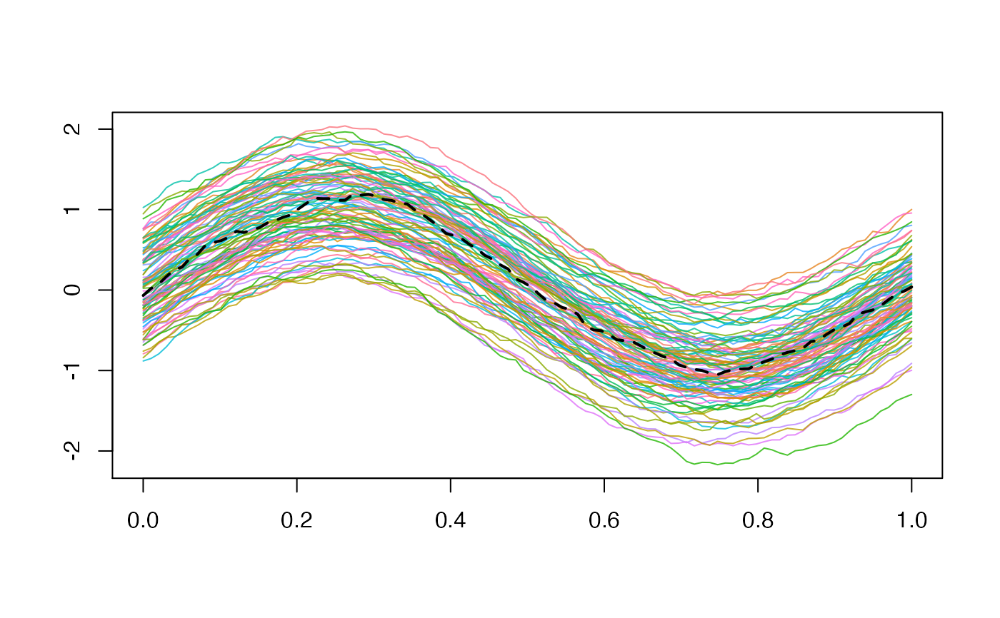

This method computes the sample median of a univariate functional dataset based on a definition of depth for univariate functional data.
median_fData(fData, type = "MBD", ...)
| fData | the univariate functional dataset whose
median is required, in form of |
|---|---|
| type | a string specifying the name of the function defining the depth
for univariate data to be used. It must be a valid name of a function defined
in the current environment, default is |
| ... | additional parameters to be used in the function specified by
argument |
The function returns a fData object containing the desired
sample median.
Provided a definition of functional depth for univariate data, the corresponding median (i.e. the deepest element of the sample) is returned as the desired median. This method does not coincide with the computation of the cross-sectional median of the sample of the point-by-point measurements on the grid. Hence, the sample median is a member of the dataset provided.
N = 1e2 P = 1e2 grid = seq( 0, 1, length.out = P ) # Generating a gaussian functional sample with desired mean # Being the distribution symmetric, the sample mean and median are coincident target_median = sin( 2 * pi * grid ) C = exp_cov_function( grid, alpha = 0.2, beta = 0.2 ) fD = fData( grid, generate_gauss_fdata( N, centerline = target_median, Cov = C ) ) # Graphical representation of the mean plot( fD )